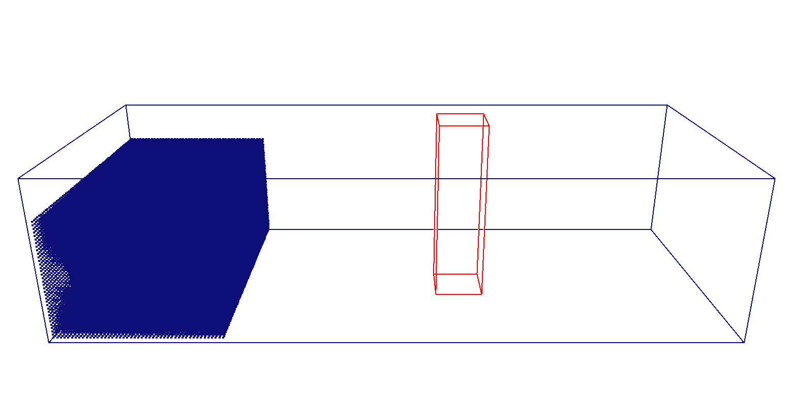

Run Your First Simulation¶
This page takes you from the downloaded package to your first simulation on screen. You will run the Dam Break example: a column of water collapses inside a tank and hits an obstacle. It is small enough to finish in a few minutes on a GPU, yet shows the full DualSPHysics workflow.

DualSPHysics is an open-source solver for free-surface flows based on Smoothed Particle Hydrodynamics (SPH). It runs on NVIDIA graphics cards (GPUs) or on ordinary multi-core processors (CPUs), hence the "Dual" in its name. The package contains pre-compiled programs for Windows and Linux, so no compilation is needed.
Before you start¶
You need:
- a Windows or Linux computer: desktop, laptop or cluster;
- for GPU runs, an NVIDIA CUDA-capable graphics card. Without one, every case can still run with the CPU version, only more slowly;
- ParaView to look at the results, free from paraview.org.
A little SPH background helps
You can run the examples without knowing SPH. To set up your own cases, however, it helps to understand a few basic ideas, such as the particle spacing, the smoothing length and how walls are represented. The Theory section, now in preparation, will introduce them from scratch.
Install DualSPHysics¶
Download the package from the DualSPHysics website and extract it wherever you like. Inside you will find:
DualSPHysics_v6.0/
├── bin/
├── doc/
├── examples/
├── src/
├── src_extra/
├── src_geomech/
├── src_mphase/
├── CHANGES.txt
├── chpermissions.sh
├── Files_DualSPHysics_v6.0.pdf
└── LICENSE
The programs in bin/windows and bin/linux are ready to use. You never call them directly: each example has batch files that run them in the right order.
Linux: set the file permissions once
On Linux, extracted files may lose their permission to be executed. Run the script chpermissions.sh, in the root of the package, once after extracting.
Installing on a cluster
DualSPHysics runs on cluster machines, which are usually Linux-based, with no compilation needed.
- Local security policies may require an administrator to allow the programs and batch files to be executed. Ask your system administrator if a program refuses to start.
- Clusters usually start jobs through a submission script (for example for Slurm). Copy the commands of the case's
.shbatch file into that script. The batch files explains each of those commands.
Run the Dambreak example¶
Go to the example folder¶
Open examples/benchmarks/00_GettingStarted/ in the extracted package.
The case inputs are:
The inspected working copy also contains Command Prompt.lnk and generated results under Dambreak2D_out/. These are not required input files, and their presence in the working copy does not establish that they are included in the release ZIP.
What is in the folder¶
| File or folder | Purpose |
|---|---|
Dambreak2D_Def.xml |
Case definition for a 2-D water column collapsing under gravity in a tank. |
wDambreak2D_win64_GPU.bat |
Windows script for particle generation, GPU simulation and post-processing. |
EXP_DamTipPosition.txt |
Experimental dam-front position data for reference. Keep the filename exactly as supplied. |
Dambreak2D_out/ |
Generated results; created when the case is run. |
Command Prompt.lnk |
Optional Windows shortcut to cmd.exe. Its working-directory field is empty; check the current directory before running the BAT. Windows may hide the .lnk extension. |
The XML defines a 1 m × 2 m initial water column in a 4 m long, 3 m high tank, with 0.01 m particle spacing and no-slip mDBC walls. It specifies 1 s of simulated time and an output interval of 0.01 s. These are the supplied case settings; no XML edits are needed for this tutorial.
Start the simulation¶
This procedure uses Windows and an NVIDIA CUDA-capable GPU. The supplied case has a Windows GPU BAT; no CPU or Linux launch script is supplied in the inspected folder.
In File Explorer, open examples/benchmarks/00_GettingStarted/. Type cmd in the address bar and press Enter to open a console there. Check that the prompt shows this folder, then run:
The BAT finds its executables through ../../../bin/windows, so keep the case in its package directory structure. It uses GenCase_win64.exe, DualSPHysics6.0_win64.exe, PartVTK_win64.exe, PartVTKOut_win64.exe and IsoSurface_win64.exe.
Double-clicking the BAT is also possible. Using an existing console makes it easier to inspect messages; the script pauses before closing.
Running the same case again
If Dambreak2D_out/ already exists, the BAT offers three choices: delete it and run again, execute post-processing only, or abort. Choose deliberately: the first option removes the existing results. See The batch files.
CPU and Linux launch scripts¶
The final package is intended to provide four launch variants for this case:
| Platform | Target | Script | Current status |
|---|---|---|---|
| Windows | GPU | wDambreak2D_win64_GPU.bat |
Available in the inspected working copy. |
| Windows | CPU | wDambreak2D_win64_CPU.bat |
Planned. |
| Linux | GPU | xDambreak2D_linux64_GPU.sh |
Planned. |
| Linux | CPU | xDambreak2D_linux64_CPU.sh |
Planned. |
Use a variant only when its script and compatible executables are present in your package. Run the Windows CPU BAT from the same case directory. On Linux, open a terminal in that directory and use the matching command once the scripts are supplied:
For the CPU variant:
The GPU variant requires a supported NVIDIA GPU; the CPU variant uses the CPU solver. Retain the package directory structure so each script can find the appropriate executables. See the Linux permissions instructions above before launching a .sh file.
What happens while it runs¶
- GenCase reads
Dambreak2D_Def.xmland creates the initial particle files underDambreak2D_out/. - DualSPHysics runs the GPU simulation and writes raw results to
Dambreak2D_out/data/. The XML also configures a horizontal water-front gauge at a height of 0.03 m. - PartVTK exports fluid and boundary particle VTK files. PartVTKOut exports excluded-particle information, and IsoSurface writes free-surface slices with the
Slicesfilename prefix.
The script checks the return code after each tool. It prints All done when all stages finish without a reported error, or Execution aborted. after a failed stage. Reaching All done confirms script completion, not physical validation.
Look at the results¶
The generated output includes:
The result subdirectories are:
| Folder | Contents |
|---|---|
data/ |
Raw simulation results (Part_####.bi4). |
gaugesvtks/ |
VTK files showing the position calculated by the Swl_z003 gauge at each saved output (GaugesSWL_Swl_z003_####.vtk). |
particles/ |
Particle data for ParaView (PartFluid_####.vtk). |
surface/ |
Free-surface data in VTK format (.vtk). |
The inspected output also contains PartBound_####.vtk in particles/ and Slices_####.vtk in surface/, matching the BAT's export commands. The solver writes the gauge VTK files because the XML enables savevtkpart. Each VTK contains the calculated gauge point, which can be displayed in ParaView; it is not the complete free-surface geometry. The time-series measurements are stored separately in GaugesSWL_Swl_z003.csv in the output root.
To view the results in ParaView:
- Choose File → Open, go to
Dambreak2D_out/particles/and select thePartFluid_####.vtkfile series. Click Apply. - Select the velocity field
Velfor colouring and press Play to animate the saved states. - Open the
PartBound_####.vtkseries from the same folder to display the tank particles. - Open the
Slices_####.vtkseries fromDambreak2D_out/surface/to inspect the exported free surface.
The files listed here were inspected in the provided output. Their presence does not by itself establish that a complete run has finished or that the simulation agrees with experiment.
Experimental reference¶
EXP_DamTipPosition.txt contains a citation to Koshizuka and Oka (1996), followed by tab-separated time and Xmax(tip_dam) columns. It supplies experimental reference values for the advancing dam front; the BAT does not read this file or perform a comparison automatically.
The generated GaugesSWL_Swl_z003.csv records the numerical gauge position over time, with units in its header. Comparing that measurement with the experimental data requires attention to the definitions of the measured quantities. No numerical agreement or completed validation is claimed here; detailed comparisons belong in the benchmark documentation.
Next steps¶
- The DualSPHysics Workflow explains each stage in detail: how GenCase builds a case, what the batch files do, and how to run the post-processing tools yourself.
- Case Definition (XML) is the reference for the case definition file.
- The Examples Catalogue shows what else the examples in
examples/main/can do. - DesignSPHysics lets you set up cases with a graphical interface instead of editing XML.